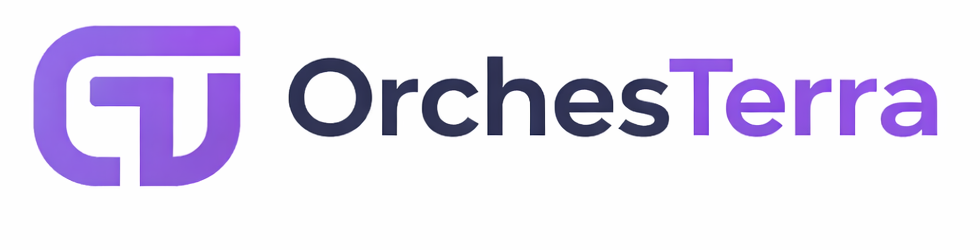

cloud-drift-report
Find what changed outside your IaC, and what your IaC never knew about.
TerraformOpenTofuCloudFormationAWSCLI · Claude · Cursor · GitHub Action
Drift report
HIGHaws_security_group.webport 22 opened to 0.0.0.0/0 in the console
HIGHaws_iam_role_policy.apps3:GetObject → s3:* outside Terraform
HIGHci-deploy-userIAM user in no state file or stack
MEDIUMaws_instance.workert3.small → t3.large
MEDIUMmarketing-exportsS3 bucket created by hand, not in IaC
LOWaws_s3_bucket.logstag CostCenter added